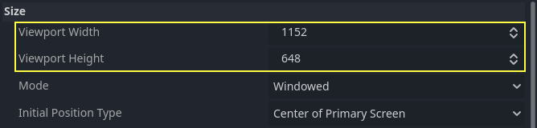
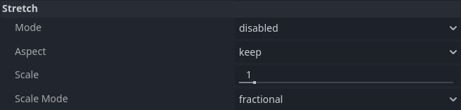
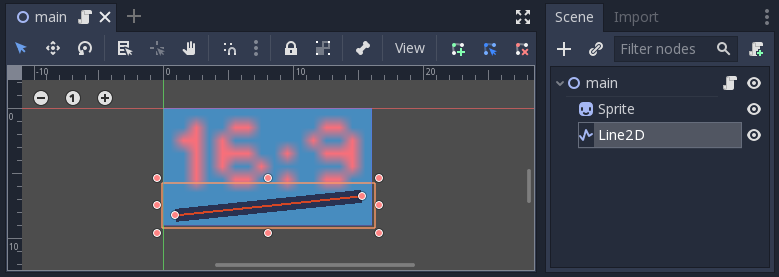
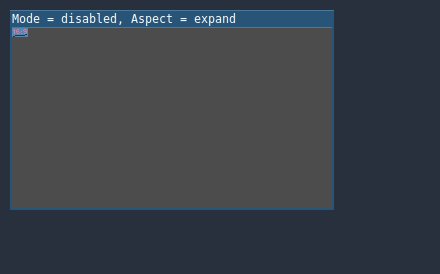
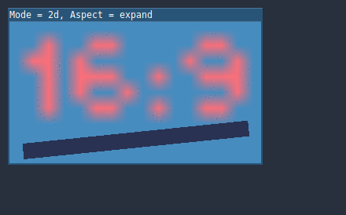
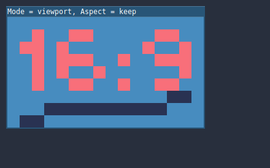
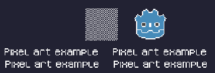
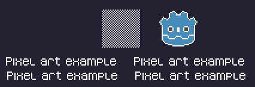

Đa độ phân giải
Vấn đề đa độ phân giải
Các nhà phát triển thường gặp khó khăn trong việc hiểu cách hỗ trợ tốt nhất nhiều độ phân giải trong game. Với game trên desktop và console, việc này ít nhiều khá đơn giản, vì hầu hết màn hình có tỷ lệ khung hình 16:9 và độ phân giải tiêu chuẩn (720p, 1080p, 1440p, 4K, …).
Với game di động, ban đầu việc này rất dễ. Trong nhiều năm, iPhone và iPad dùng cùng một độ phân giải. Khi Retina ra đời, họ chỉ đơn giản nhân đôi mật độ điểm ảnh; hầu hết nhà phát triển phải cung cấp tài nguyên ở độ phân giải mặc định và gấp đôi.
Ngày nay, điều đó không còn đúng nữa, vì có rất nhiều kích thước, mật độ và tỷ lệ khung hình màn hình khác nhau. Các kích thước khác thường cũng ngày càng phổ biến, chẳng hạn như màn hình siêu rộng (ultrawide).
Với kết xuất 3D, không cần hỗ trợ nhiều độ phân giải lắm. Nhờ bản chất dựa trên vector, hình học 3D sẽ tự lấp đầy màn hình dựa trên kích thước viewport. Với 2D và UI của game thì khác, vì hình ảnh cần được tạo với kích thước pixel cụ thể trong phần mềm như Photoshop, GIMP hoặc Krita.
Vì bố cục, tỷ lệ khung hình, độ phân giải và mật độ điểm ảnh có thể thay đổi rất nhiều, không còn cách nào thiết kế UI cho từng màn hình cụ thể. Cần dùng một phương pháp khác.
Một kích thước cho tất cả
Cách tiếp cận phổ biến nhất là dùng một độ phân giải cơ sở duy nhất rồi điều chỉnh cho vừa với mọi thứ khác. Độ phân giải này là độ phân giải mà hầu hết người chơi dự kiến sẽ dùng để chơi game (tùy theo phần cứng của họ). Với di động, Google có số liệu thống kê hữu ích trực tuyến, và với desktop, Steam cũng có.
Ví dụ, Steam cho thấy độ phân giải màn hình chính phổ biến nhất là 1920×1080, vì vậy một cách tiếp cận hợp lý là phát triển game cho độ phân giải này, rồi xử lý việc co giãn cho các kích thước và tỷ lệ khung hình khác.
Godot cung cấp một số công cụ hữu ích để làm việc này dễ dàng.
Xem thêm
Bạn có thể xem cách Godot hỗ trợ đa độ phân giải hoạt động thực tế bằng dự án demo Multiple Resolutions and Aspect Ratios.
Kích thước cơ sở
Kích thước cơ sở của cửa sổ có thể được chỉ định trong Project Settings tại Display → Window.

Tuy nhiên, tác dụng của nó không hoàn toàn rõ ràng; engine sẽ không cố chuyển màn hình sang độ phân giải này. Thay vào đó, hãy coi cài đặt này là "kích thước thiết kế", tức là kích thước vùng mà bạn làm việc trong trình chỉnh sửa. Cài đặt này tương ứng trực tiếp với kích thước của hình chữ nhật màu xanh trong trình chỉnh sửa 2D.
Thường có nhu cầu hỗ trợ các thiết bị có kích thước màn hình và cửa sổ khác với kích thước cơ sở này. Godot cung cấp nhiều cách để kiểm soát việc viewport được thay đổi kích thước và kéo giãn cho các kích thước màn hình khác nhau.
Ghi chú
Trên trang này, cửa sổ (window) là vùng màn hình mà hệ thống cấp cho game của bạn, còn viewport là đối tượng gốc (truy cập được từ get_tree().root) mà game điều khiển để lấp đầy vùng màn hình này. Viewport này là một instance của Window. Như đã nói trong phần giới thiệu, mọi đối tượng Window đều là viewport.
Để cấu hình kích thước cơ sở kéo giãn lúc runtime từ script, hãy dùng thuộc tính get_tree().root.content_scale_size (xem Window.content_scale_size). Thay đổi giá trị này có thể gián tiếp thay đổi kích thước các phần tử 2D. Tuy nhiên, để cung cấp tùy chọn co giãn cho người dùng, nên dùng Stretch Scale vì nó dễ điều chỉnh hơn.
Ghi chú
Godot theo cách tiếp cận hiện đại với đa độ phân giải. Engine sẽ không bao giờ tự thay đổi độ phân giải của màn hình. Mặc dù thay đổi độ phân giải màn hình là cách hiệu quả nhất, nó cũng là cách kém tin cậy nhất vì có thể khiến màn hình bị kẹt ở độ phân giải thấp nếu game bị crash. Điều này đặc biệt phổ biến trên macOS hoặc Linux, vốn không xử lý việc thay đổi độ phân giải tốt như Windows.
Thay đổi độ phân giải màn hình cũng khiến nhà phát triển game mất toàn quyền kiểm soát việc lọc và kéo giãn tỷ lệ khung hình, điều có thể quan trọng để đảm bảo hiển thị đúng cho game pixel art.
Hơn nữa, thay đổi độ phân giải màn hình khiến việc alt-tab vào và ra khỏi game chậm hơn nhiều, vì màn hình phải thay đổi độ phân giải mỗi lần làm vậy.
Thay đổi kích thước
Có nhiều loại thiết bị với nhiều loại màn hình, và chúng lại có mật độ điểm ảnh và độ phân giải khác nhau. Xử lý tất cả có thể rất tốn công, vì vậy Godot cố gắng giúp cuộc sống của nhà phát triển dễ dàng hơn một chút. Node Viewport có một số hàm để xử lý việc thay đổi kích thước, và node gốc của cây scene luôn là một viewport (các scene được tải sẽ được tạo instance làm con của nó, và luôn có thể truy cập nó bằng cách gọi get_tree().root hoặc get_node("/root")).
Dù sao đi nữa, mặc dù thay đổi các tham số của Viewport gốc có lẽ là cách linh hoạt nhất để xử lý vấn đề, nó có thể đòi hỏi nhiều công sức, code và phỏng đoán, vì vậy Godot cung cấp một bộ tham số trong cài đặt dự án để xử lý đa độ phân giải.
Mẹo
Để kết xuất 3D ở độ phân giải thấp hơn các phần tử 2D (mà không cần viewport riêng), bạn có thể dùng tính năng co giãn độ phân giải của Godot. Đây là cách tốt để cải thiện đáng kể hiệu năng trong các tình huống bị nghẽn GPU. Cách này hoạt động với mọi tổ hợp stretch mode và stretch aspect.
Cài đặt kéo giãn
Ghi chú
Khi thử nghiệm các stretch mode và cài đặt stretch aspect khác nhau, hãy đảm bảo nhúng game được cấu hình để dùng tùy chọn co giãn Stretch to Fit:

Điều này đảm bảo kích thước viewport luôn khớp với kích thước cửa sổ, giống như khi tắt nhúng game.
Các cài đặt kéo giãn nằm trong cài đặt dự án và cung cấp một số tùy chọn:

Stretch Mode
Cài đặt Stretch Mode xác định cách kích thước cơ sở được kéo giãn để vừa với độ phân giải của cửa sổ hoặc màn hình. Các hoạt ảnh dưới đây dùng "kích thước cơ sở" chỉ 16×9 pixel để minh họa tác dụng của các stretch mode khác nhau. Một sprite duy nhất, cũng có kích thước 16×9 pixel, phủ toàn bộ viewport, và một Line2D chéo được thêm lên trên:

Stretch Mode = Disabled (mặc định): Không có kéo giãn nào xảy ra. Một đơn vị trong scene tương ứng với một pixel trên màn hình. Ở chế độ này, cài đặt Stretch Aspect không có tác dụng.

Stretch Mode = Canvas Items: Ở chế độ này, kích thước cơ sở được chỉ định bằng chiều rộng và chiều cao trong cài đặt dự án sẽ được kéo giãn để phủ toàn bộ màn hình (có tính đến cài đặt Stretch Aspect). Điều này có nghĩa là mọi thứ được kết xuất trực tiếp ở độ phân giải đích. 3D không bị ảnh hưởng, còn với 2D, không còn sự tương ứng 1:1 giữa pixel của sprite và pixel màn hình, điều này có thể gây ra lỗi hình ảnh do co giãn (scaling artifacts).

Stretch Mode = Viewport: Co giãn viewport có nghĩa là kích thước của Viewport gốc được đặt chính xác bằng kích thước cơ sở chỉ định trong mục Display của Project Settings. Scene được kết xuất vào viewport này trước. Cuối cùng, viewport này được co giãn để vừa với màn hình (có tính đến cài đặt Stretch Aspect).

Để cấu hình stretch mode lúc runtime từ script, hãy dùng thuộc tính get_tree().root.content_scale_mode (xem Window.content_scale_mode và enum ContentScaleMode).
Stretch Aspect
Cài đặt thứ hai là stretch aspect. Lưu ý rằng cài đặt này chỉ có tác dụng nếu Stretch Mode được đặt khác Disabled.
Trong các hoạt ảnh dưới đây, bạn sẽ thấy các vùng màu xám và màu đen. Các vùng màu đen do engine thêm vào và không thể vẽ lên. Các vùng màu xám là một phần của scene và có thể vẽ lên. Các vùng màu xám tương ứng với khu vực bên ngoài khung màu xanh mà bạn thấy trong trình chỉnh sửa 2D.
Stretch Aspect = Ignore: Bỏ qua tỷ lệ khung hình khi kéo giãn màn hình. Điều này có nghĩa là độ phân giải gốc sẽ được kéo giãn để lấp đầy chính xác màn hình, ngay cả khi màn hình rộng hơn hoặc hẹp hơn. Điều này có thể gây kéo giãn không đồng đều: mọi thứ trông rộng hơn hoặc cao hơn so với thiết kế.
Stretch Aspect = Keep: Giữ tỷ lệ khung hình khi kéo giãn màn hình. Điều này có nghĩa là viewport giữ nguyên kích thước gốc bất kể độ phân giải màn hình, và các dải đen sẽ được thêm vào phía trên/dưới màn hình ("letterboxing") hoặc hai bên ("pillarboxing").
Đây là lựa chọn tốt nếu bạn biết trước tỷ lệ khung hình của các thiết bị mục tiêu, hoặc nếu bạn không muốn xử lý các tỷ lệ khung hình khác nhau.

Stretch Aspect = Keep Width: Giữ tỷ lệ khung hình khi kéo giãn màn hình. Nếu màn hình rộng hơn kích thước cơ sở, các dải đen sẽ được thêm vào bên trái và bên phải (pillarboxing). Nhưng nếu màn hình cao hơn độ phân giải cơ sở, viewport sẽ được mở rộng theo chiều dọc (và nhiều nội dung hơn sẽ hiển thị ở phía dưới). Bạn cũng có thể coi đây là "Mở rộng theo chiều dọc".
Đây thường là lựa chọn tốt nhất để tạo GUI hoặc HUD có thể co giãn, nhờ đó một số control có thể được neo vào phía dưới (Kích thước và anchor).

Stretch Aspect = Keep Height: Giữ tỷ lệ khung hình khi kéo giãn màn hình. Nếu màn hình cao hơn kích thước cơ sở, các dải đen sẽ được thêm vào phía trên và phía dưới (letterboxing). Nhưng nếu màn hình rộng hơn độ phân giải cơ sở, viewport sẽ được mở rộng theo chiều ngang (và nhiều nội dung hơn sẽ hiển thị ở bên phải). Bạn cũng có thể coi đây là "Mở rộng theo chiều ngang".
Đây thường là lựa chọn tốt nhất cho game 2D cuộn ngang (như game chạy vô tận hoặc game đi cảnh).

Stretch Aspect = Expand: Giữ tỷ lệ khung hình khi kéo giãn màn hình, nhưng không giữ cả chiều rộng lẫn chiều cao cơ sở. Tùy vào tỷ lệ khung hình của màn hình, viewport sẽ lớn hơn theo chiều ngang (nếu màn hình rộng hơn kích thước cơ sở) hoặc theo chiều dọc (nếu màn hình cao hơn kích thước gốc).
Mẹo
Để hỗ trợ cả chế độ dọc và ngang với hệ số co giãn tự động tương tự nhau, hãy đặt độ phân giải cơ sở của dự án là một hình vuông (tỷ lệ khung hình 1:1) thay vì hình chữ nhật. Ví dụ, nếu bạn muốn thiết kế với độ phân giải cơ sở 1280×720 nhưng muốn hỗ trợ cả chế độ dọc và ngang, hãy dùng 720×720 làm kích thước cửa sổ cơ sở của dự án trong Project Settings.
Để cho phép người dùng chọn hướng màn hình ưa thích lúc runtime, hãy nhớ đặt Display > Window > Handheld > Orientation thành sensor.
Để cấu hình stretch aspect lúc runtime từ script, hãy dùng thuộc tính get_tree().root.content_scale_aspect (xem Window.content_scale_aspect và enum ContentScaleAspect).
Stretch Scale
Cài đặt Scale cho phép bạn thêm một hệ số co giãn bổ sung ngoài những gì các tùy chọn Stretch ở trên đã cung cấp. Giá trị mặc định 1.0 nghĩa là không có co giãn bổ sung nào.
Ví dụ, nếu bạn đặt Scale thành 2.0 và để Stretch Mode ở Disabled, mỗi đơn vị trong scene sẽ tương ứng với 2×2 pixel trên màn hình. Đây là cách tốt để cung cấp tùy chọn co giãn cho các ứng dụng không phải game.
Nếu Stretch Mode được đặt thành canvas_items, các phần tử 2D sẽ được co giãn tương đối theo kích thước cửa sổ cơ sở, rồi nhân với cài đặt Scale. Bạn có thể cung cấp tùy chọn này cho người chơi để họ điều chỉnh tỷ lệ tự động theo ý thích, giúp tăng khả năng tiếp cận.
Nếu Stretch Mode được đặt thành viewport, độ phân giải của viewport sẽ được chia cho Scale. Điều này khiến các pixel trông lớn hơn và giảm độ phân giải kết xuất (với một kích thước cửa sổ nhất định), có thể giúp cải thiện hiệu năng.
Để cấu hình stretch scale lúc runtime từ script, hãy dùng thuộc tính get_tree().root.content_scale_factor (xem Window.content_scale_factor).
Bạn cũng có thể điều chỉnh tỷ lệ tạo theme mặc định của dự án bằng cài đặt dự án GUI > Theme > Default Theme Scale. Cài đặt này có thể dùng để tạo UI có kích thước hợp lý hơn ở các độ phân giải cơ sở cao hơn hoặc thấp hơn đáng kể so với mặc định. Tuy nhiên, cài đặt dự án này không thể thay đổi lúc runtime, vì giá trị của nó chỉ được đọc một lần khi dự án khởi động.
Stretch Scale Mode
Kể từ Godot 4.2, cài đặt Stretch Scale Mode cho phép bạn giới hạn hệ số co giãn tự động (cũng như cài đặt Stretch Scale chỉ định thủ công) ở các giá trị nguyên. Theo mặc định, cài đặt này là fractional, cho phép áp dụng bất kỳ hệ số co giãn nào (kể cả giá trị thập phân như 2.5). Khi đặt thành integer, giá trị được làm tròn xuống số nguyên gần nhất. Ví dụ, thay vì dùng hệ số co giãn 2.5, nó sẽ được làm tròn xuống 2.0. Điều này hữu ích để tránh méo hình khi hiển thị pixel art.
Hãy so sánh hình pixel art này, được hiển thị với stretch mode viewport và stretch scale mode đặt thành fractional:

Bàn cờ trông không "đều". Độ rộng nét trong logo và chữ chênh lệch rất nhiều.
Hình pixel art này cũng được hiển thị với stretch mode viewport, nhưng lần này stretch scale mode được đặt thành integer:

Bàn cờ trông hoàn toàn đều. Độ rộng nét nhất quán.
Ví dụ, nếu kích thước cơ sở của viewport là 640×360 và kích thước cửa sổ là 1366×768:
Khi dùng
fractional, viewport được hiển thị ở độ phân giải 1366×768 (hệ số co giãn khoảng 2.133×). Toàn bộ không gian cửa sổ được sử dụng. Mỗi pixel trong viewport tương ứng với 2.133×2.133 pixel trong vùng hiển thị. Tuy nhiên, vì màn hình chỉ có thể hiển thị pixel "nguyên", điều này sẽ dẫn đến co giãn pixel không đều, khiến pixel art hiển thị sai.Khi dùng
integer, viewport được hiển thị ở độ phân giải 1280×720 (hệ số co giãn là 2×). Phần không gian còn lại được lấp bằng các dải đen ở cả bốn cạnh, để mỗi pixel trong viewport tương ứng với 2×2 pixel trong vùng hiển thị.
Cài đặt này có tác dụng với mọi stretch mode. Tuy nhiên, khi dùng stretch mode disabled, nó chỉ ảnh hưởng đến cài đặt Stretch Scale bằng cách làm tròn xuống số nguyên gần nhất. Điều này có thể dùng cho game 3D có UI pixel art, để vùng hiển thị trong viewport 3D không bị thu nhỏ (điều xảy ra khi dùng stretch mode canvas_items hoặc viewport với scale mode integer).
Mẹo
Game nên dùng chế độ cửa sổ Exclusive Fullscreen thay vì Fullscreen, vốn được thiết kế để ngăn Windows tự động xem cửa sổ như thể nó là toàn màn hình độc quyền.
Fullscreen dành cho các ứng dụng GUI muốn dùng độ trong suốt theo từng pixel mà không có nguy cơ bị hệ điều hành tắt đi. Nó làm được điều này bằng cách chừa lại một dòng 1 pixel ở cạnh dưới màn hình. Ngược lại, Exclusive Fullscreen dùng kích thước màn hình thực tế và cho phép Windows giảm jitter và độ trễ input cho game toàn màn hình.
Khi dùng co giãn số nguyên, điều này đặc biệt quan trọng vì việc giảm 1 pixel chiều cao của chế độ Fullscreen có thể khiến co giãn số nguyên dùng hệ số nhỏ hơn dự kiến.
Các tình huống sử dụng phổ biến
Các cài đặt sau được khuyến nghị để hỗ trợ tốt nhiều độ phân giải và tỷ lệ khung hình.
Game desktop
Không phải pixel art:
Đặt chiều rộng cửa sổ cơ sở là
1920và chiều cao cửa sổ là1080. Nếu màn hình của bạn nhỏ hơn 1920×1080, hãy đặt Window Width Override và Window Height Override thành giá trị thấp hơn để cửa sổ nhỏ hơn khi dự án khởi động.Ngoài ra, nếu bạn chủ yếu nhắm đến thiết bị cao cấp, hãy đặt chiều rộng cửa sổ cơ sở là
3840và chiều cao cửa sổ là2160. Điều này cho phép bạn cung cấp tài nguyên 2D có độ phân giải cao hơn, mang lại hình ảnh sắc nét hơn, đổi lại tốn nhiều bộ nhớ và dung lượng file hơn. Bạn cũng nên tăng GUI > Theme > Default Theme Scale lên giá trị từ2.0đến3.0để đảm bảo các phần tử UI vẫn dễ đọc.Lưu ý rằng điều này sẽ khiến các texture không có mipmap bị lổn nhổn trên thiết bị độ phân giải thấp, vì vậy hãy làm theo hướng dẫn trong Giảm răng cưa khi downsampling.
Đặt stretch mode thành
canvas_items.Đặt stretch aspect thành
expand. Điều này cho phép hỗ trợ nhiều tỷ lệ khung hình và tận dụng tốt hơn màn hình điện thoại thông minh dạng cao (chẳng hạn tỷ lệ 18:9 hoặc 19:9).Cấu hình anchor của các node Control để bám vào đúng góc bằng menu Layout.
Với game 3D, hãy cân nhắc đưa Co giãn độ phân giải vào menu tùy chọn của game để người chơi có thể điều chỉnh độ phân giải kết xuất 3D riêng biệt với các phần tử UI. Điều này hữu ích cho việc tinh chỉnh hiệu năng, đặc biệt trên phần cứng cấp thấp.
Pixel art:
Đặt kích thước cửa sổ cơ sở bằng kích thước viewport bạn định dùng. Hầu hết game pixel art dùng kích thước viewport từ 256×224 đến 640×480. 640×360 là mức cơ sở tốt, vì nó co giãn lên 1280×720, 1920×1080, 2560×1440 và 3840×2160 mà không có dải đen nào khi dùng co giãn số nguyên. Kích thước viewport lớn hơn sẽ đòi hỏi hình ảnh có độ phân giải cao hơn, trừ khi bạn định hiển thị nhiều phần thế giới game hơn cùng một lúc.
Đặt stretch mode thành
viewport.Đặt stretch aspect thành
keepđể buộc dùng một tỷ lệ khung hình duy nhất (có dải đen). Hoặc, bạn có thể đặt stretch aspect thànhexpandđể hỗ trợ nhiều tỷ lệ khung hình.Nếu dùng stretch aspect
expand, hãy cấu hình anchor của các node Control để bám vào đúng góc bằng menu Layout.Đặt stretch scale mode thành
integer. Điều này ngăn việc co giãn pixel không đều, vốn khiến pixel art không hiển thị như mong muốn.
Ghi chú
Stretch mode viewport cung cấp kết xuất ở độ phân giải thấp rồi kéo giãn lên kích thước cửa sổ cuối cùng. Nếu bạn chấp nhận việc sprite có thể di chuyển hoặc xoay ở vị trí "sub-pixel", hoặc muốn có viewport 3D độ phân giải cao, bạn nên dùng stretch mode canvas_items thay vì stretch mode viewport.
Game di động ở chế độ ngang
Godot được cấu hình để dùng chế độ ngang theo mặc định. Điều này có nghĩa là bạn không cần thay đổi cài đặt dự án về hướng hiển thị.
Đặt chiều rộng cửa sổ cơ sở là
1280và chiều cao cửa sổ là720.Ngoài ra, nếu bạn chủ yếu nhắm đến thiết bị cao cấp, hãy đặt chiều rộng cửa sổ cơ sở là
1920và chiều cao cửa sổ là1080. Điều này cho phép bạn cung cấp tài nguyên 2D có độ phân giải cao hơn, mang lại hình ảnh sắc nét hơn, đổi lại tốn nhiều bộ nhớ và dung lượng file hơn. Nhiều thiết bị có màn hình độ phân giải còn cao hơn (1440p), nhưng khác biệt so với 1080p hầu như không thấy được do màn hình điện thoại thông minh có kích thước nhỏ. Bạn cũng nên tăng GUI > Theme > Default Theme Scale lên giá trị từ1.5đến2.0để đảm bảo các phần tử UI vẫn dễ đọc.Lưu ý rằng điều này sẽ khiến các texture không có mipmap bị lổn nhổn trên thiết bị độ phân giải thấp, vì vậy hãy làm theo hướng dẫn trong Giảm răng cưa khi downsampling.
Đặt stretch mode thành
canvas_items.Đặt stretch aspect thành
expand. Điều này cho phép hỗ trợ nhiều tỷ lệ khung hình và tận dụng tốt hơn màn hình điện thoại thông minh dạng cao (chẳng hạn tỷ lệ 18:9 hoặc 19:9).Cấu hình anchor của các node Control để bám vào đúng góc bằng menu Layout.
Mẹo
Để hỗ trợ tốt hơn máy tính bảng và điện thoại gập (thường có màn hình với tỷ lệ khung hình gần 4:3), hãy cân nhắc dùng độ phân giải cơ sở có tỷ lệ khung hình 4:3 trong khi vẫn làm theo phần còn lại của hướng dẫn ở đây. Ví dụ, bạn có thể đặt chiều rộng cửa sổ cơ sở là 1280 và chiều cao cửa sổ cơ sở là 960.
Game di động ở chế độ dọc
Đặt chiều rộng cửa sổ cơ sở là
720và chiều cao cửa sổ là1280.Ngoài ra, nếu bạn chủ yếu nhắm đến thiết bị cao cấp, hãy đặt chiều rộng cửa sổ cơ sở là
1080và chiều cao cửa sổ là1920. Điều này cho phép bạn cung cấp tài nguyên 2D có độ phân giải cao hơn, mang lại hình ảnh sắc nét hơn, đổi lại tốn nhiều bộ nhớ và dung lượng file hơn. Nhiều thiết bị có màn hình độ phân giải còn cao hơn (1440p), nhưng khác biệt so với 1080p hầu như không thấy được do màn hình điện thoại thông minh có kích thước nhỏ. Bạn cũng nên tăng GUI > Theme > Default Theme Scale lên giá trị từ1.5đến2.0để đảm bảo các phần tử UI vẫn dễ đọc.Lưu ý rằng điều này sẽ khiến các texture không có mipmap bị lổn nhổn trên thiết bị độ phân giải thấp, vì vậy hãy làm theo hướng dẫn trong Giảm răng cưa khi downsampling.
Đặt Display > Window > Handheld > Orientation thành
portrait.Đặt stretch mode thành
canvas_items.Đặt stretch aspect thành
expand. Điều này cho phép hỗ trợ nhiều tỷ lệ khung hình và tận dụng tốt hơn màn hình điện thoại thông minh dạng cao (chẳng hạn tỷ lệ 18:9 hoặc 19:9).Cấu hình anchor của các node Control để bám vào đúng góc bằng menu Layout.
Mẹo
Để hỗ trợ tốt hơn máy tính bảng và điện thoại gập (thường có màn hình với tỷ lệ khung hình gần 4:3), hãy cân nhắc dùng độ phân giải cơ sở có tỷ lệ khung hình 3:4 trong khi vẫn làm theo phần còn lại của hướng dẫn ở đây. Ví dụ, bạn có thể đặt chiều rộng cửa sổ cơ sở là 960 và chiều cao cửa sổ cơ sở là 1280.
Ứng dụng không phải game
Đặt chiều rộng và chiều cao cửa sổ cơ sở bằng kích thước cửa sổ nhỏ nhất mà bạn định hỗ trợ. Việc này không bắt buộc, nhưng giúp đảm bảo bạn thiết kế UI có tính đến kích thước cửa sổ nhỏ.
Giữ stretch mode ở giá trị mặc định,
disabled.Giữ stretch aspect ở giá trị mặc định,
keep(giá trị này sẽ không được dùng vì stretch mode làdisabled).Bạn có thể xác định kích thước cửa sổ tối thiểu bằng cách đặt
get_window().min_sizetrong hàm_ready()của một script. Điều này ngăn người dùng thu nhỏ ứng dụng dưới một kích thước nhất định, vốn có thể làm hỏng bố cục UI.Thêm một tùy chọn trong phần cài đặt của ứng dụng để thay đổi stretch scale của viewport gốc, để UI có thể được phóng to cho màn hình hiDPI. Xem thêm phần hỗ trợ hiDPI bên dưới.
Hỗ trợ hiDPI
Theo mặc định, các dự án Godot được hệ điều hành coi là có nhận biết DPI (DPI-aware). Điều này được kiểm soát bởi cài đặt dự án Display > Window > DPI > Allow hiDPI, vốn nên để bật bất cứ khi nào có thể. Tắt nhận biết DPI có thể làm hỏng hành vi toàn màn hình trên Windows.
Vì các dự án Godot có nhận biết DPI, chúng có thể hiển thị với kích thước cửa sổ rất nhỏ khi khởi chạy trên màn hình hiDPI (tỷ lệ với độ phân giải màn hình). Với game, cách phổ biến nhất để khắc phục vấn đề này là cho chạy toàn màn hình theo mặc định. Hoặc, bạn có thể đặt kích thước cửa sổ trong hàm _ready() của một autoload theo kích thước màn hình.
Để đảm bảo các phần tử 2D không hiển thị quá nhỏ trên màn hình hiDPI:
Với game, hãy dùng stretch mode
canvas_itemshoặcviewportđể các phần tử 2D được tự động thay đổi kích thước theo kích thước cửa sổ hiện tại.Với ứng dụng không phải game, hãy dùng stretch mode
disabledvà đặt stretch scale thành giá trị tương ứng với hệ số tỷ lệ hiển thị trong hàm_ready()của một autoload. Hệ số tỷ lệ hiển thị được đặt trong cài đặt của hệ điều hành và có thể truy vấn bằng screen_get_scale. Phương thức này hiện được triển khai trên Android, iOS, Linux (chỉ Wayland), macOS và Web. Trên các nền tảng khác, bạn sẽ phải tự triển khai một phương thức để ước đoán hệ số tỷ lệ hiển thị dựa trên độ phân giải màn hình (kèm một tùy chọn để người dùng ghi đè nếu cần). Đây là cách tiếp cận mà trình chỉnh sửa Godot hiện đang dùng.
Cài đặt Allow hiDPI chỉ có tác dụng trên Windows và macOS. Nó bị bỏ qua trên tất cả các nền tảng khác.
Ghi chú
Bản thân trình chỉnh sửa Godot luôn được đánh dấu là có nhận biết DPI. Chạy dự án từ trình chỉnh sửa sẽ chỉ có nhận biết DPI nếu Allow hiDPI được bật trong Project Settings.
Oversampling phông chữ và hình ảnh
Godot hỗ trợ một quá trình gọi là oversampling, tức là tự động kết xuất lại texture từ nguồn vector gốc khi hệ số co giãn của viewport thay đổi. Điều này đảm bảo texture phông chữ và hình ảnh luôn sắc nét ở mọi độ phân giải.
Oversampling phông chữ được bật theo mặc định, nhưng có thể tắt bằng cách bỏ chọn GUI > Fonts > Dynamic Fonts > Use Oversampling trong Project Settings.
Oversampling hình ảnh bị tắt theo mặc định, và có thể bật cho từng hình ảnh định dạng SVG bằng cách đổi kiểu import của chúng thành class_DPITexture trong dock Import. Các định dạng hình ảnh khác không hỗ trợ oversampling, vì chúng lưu dữ liệu bitmap thay vì vector.
Trình chỉnh sửa tự động thực hiện oversampling khi phóng to trong trình chỉnh sửa 2D, cho phép bạn xem trước oversampling trông như thế nào ở các hệ số co giãn cụ thể. Có thể tắt điều này bằng cách bỏ chọn View > Auto Resample CanvasItems ở phía trên viewport của trình chỉnh sửa 2D.
Oversampling cũng có thể được áp dụng theo thuộc tính Scale của Node2D hoặc Control. Hành vi oversampling theo scale này bị tắt theo mặc định, nhưng có thể bật bằng cách đặt Oversampling with Scale trong inspector thành Enabled trên node mong muốn. Điều này hữu ích cho các node có thể bị thay đổi scale lúc runtime, chẳng hạn hệ số co giãn tùy chỉnh cho một số phần tử UI như tâm ngắm. Tuy nhiên, hãy lưu ý việc này có thể tốn nhiều CPU nếu scale thay đổi thường xuyên, vì texture phải được kết xuất lại mỗi lần.
Để có kết quả tốt nhất, node nên dùng co giãn đồng đều. Co giãn không đồng đều vẫn hoạt động, nhưng có thể gây răng cưa (aliasing) trên trục ngắn hơn vì oversampling luôn được áp dụng đồng đều.
Ghi chú
Thuộc tính offset_transform_enabled của Control được tính đến trong oversampling theo scale, nhưng chỉ khi offset_transform_visual_only bị tắt. Khi offset_transform_visual_only được bật, nó không ảnh hưởng đến scale thực tế của node (dùng cho tọa độ input), mà chỉ ảnh hưởng đến hình ảnh hiển thị. Do đó, nó bị oversampling bỏ qua.
Giảm răng cưa khi downsampling
Nếu game có độ phân giải cơ sở rất cao (ví dụ 3840×2160), hiện tượng răng cưa có thể xuất hiện khi downsampling xuống mức thấp hơn đáng kể như 1280×720.
Để giải quyết điều này, bạn có thể bật mipmap cho tất cả texture 2D. Tuy nhiên, bật mipmap sẽ làm tăng mức sử dụng bộ nhớ, điều có thể là vấn đề trên thiết bị di động cấp thấp.
Với hình ảnh SVG, bạn cũng có thể đổi kiểu import của chúng thành class_DPITexture trong dock Import để tận dụng oversampling tự động như mô tả ở trên. Cách này tránh răng cưa bằng cách raster hóa lại texture khi hệ số co giãn thay đổi.
Xử lý tỷ lệ khung hình
Sau khi đã tính đến việc co giãn cho các độ phân giải khác nhau, hãy đảm bảo giao diện người dùng của bạn cũng co giãn theo các tỷ lệ khung hình khác nhau. Việc này có thể thực hiện bằng anchor và/hoặc container.
Co giãn trường nhìn
Thuộc tính Keep Aspect của node Camera 3D mặc định dùng chế độ co giãn Keep Height (còn gọi là Hor+). Đây thường là giá trị tốt nhất cho game desktop và game di động ở chế độ ngang, vì màn hình rộng sẽ tự động dùng trường nhìn rộng hơn.
Tuy nhiên, nếu game 3D của bạn được thiết kế để chơi ở chế độ dọc, có thể hợp lý hơn khi dùng Keep Width (còn gọi là Vert-). Bằng cách này, điện thoại thông minh có tỷ lệ khung hình cao hơn 16:9 (ví dụ 19:9) sẽ dùng trường nhìn cao hơn, điều hợp lý hơn trong trường hợp này.
Co giãn phần tử 2D và 3D khác nhau
Để kết xuất 3D ở độ phân giải khác với các phần tử 2D (như UI), hãy dùng tính năng co giãn độ phân giải của Godot. Tính năng này cho phép bạn kiểm soát hệ số co giãn độ phân giải dùng cho 3D mà không cần dùng node Viewport riêng. Có thể dùng nó để cải thiện hiệu năng bằng cách kết xuất 3D ở độ phân giải thấp hơn, hoặc cải thiện chất lượng nhờ supersampling.